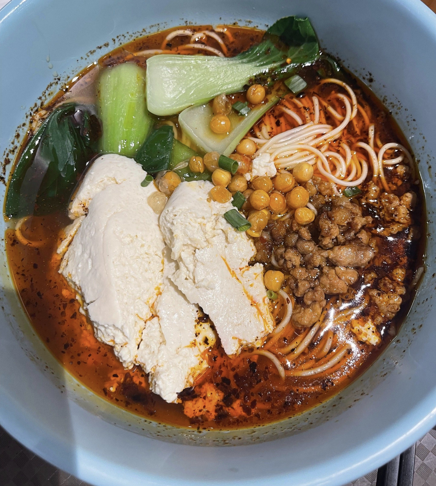
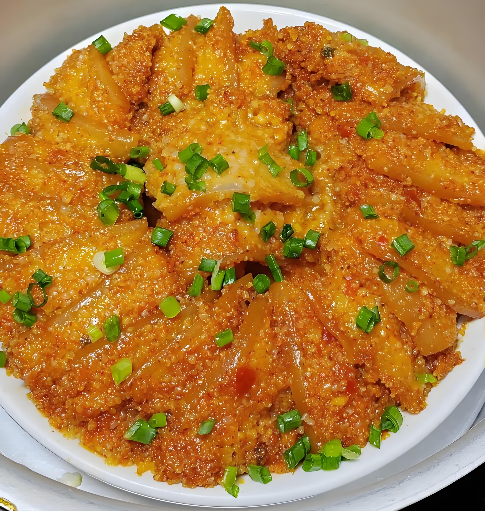
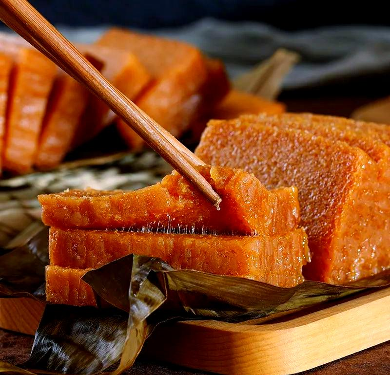
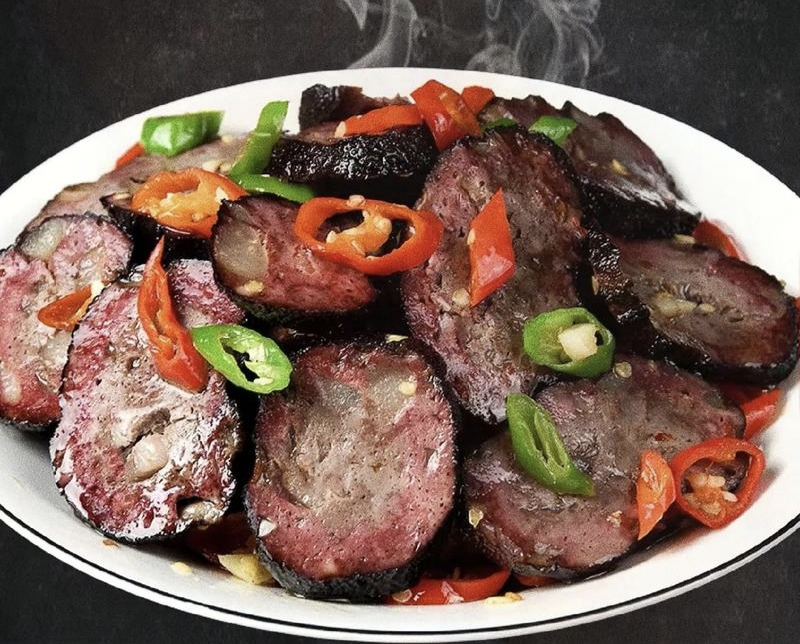
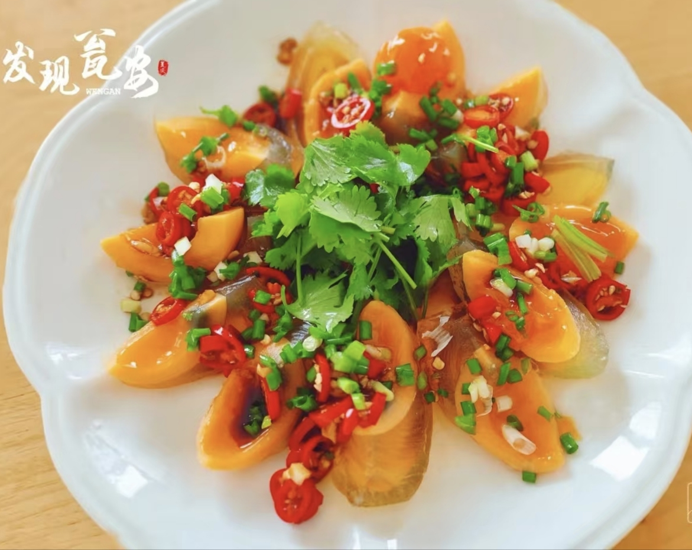
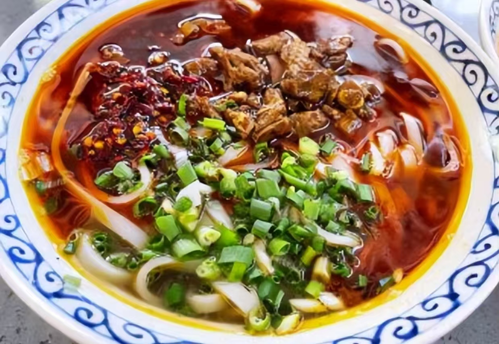

千年古邑，红色瓮安，品鉴地道乡土风味
瓮安历史悠久、人文厚重，汉、苗、布依、仡佬等多个民族在此世代共居，各族饮食文化相互交融、自成一派。当地坚持以铸牢中华民族共同体意识为主线，依托特色美食搭建交流平台，推行邻里结对、美食共享、技艺互学等举措。一道道家常美味串联起村寨与楼栋的温情日常，让各民族在共品美食、共传技艺中加深情谊，携手共建和美家园。

瓮安豆花面是当地各族群众喜爱的特色小吃，见证着民族间的互学相融。 这里汉、苗、布依等多民族和睦聚居，豆花与碱水面的搭配、秘制蘸水的调配技艺在邻里间不断交流改良。日常邻里互邀品尝，节庆餐桌共享美味，一碗鲜香爽滑的豆花面，拉近了各族情谊，让共同体意识融入寻常烟火。

粉蒸肉是瓮安极具代表性的民间菜肴，承载着当地多元交融的饮食文化。 汉、苗、布依等各族群众在长久相处中，不断融合调味手法与蒸制工艺，让这道菜品风味独具。无论是家庭聚餐，还是村寨集体活动，粉蒸肉都是餐桌上的常客。美食相伴，笑语相融，各族群众在共享美味的同时，同心相伴、和睦共处。

瓮安黄粑是当地家喻户晓的传统美食，更是各族群众交往交融的温情载体。当地汉、苗、布依等民族世代比邻而居，黄粑的选材、蒸制等手艺在邻里间相互学习、取长补短。每逢佳节，各族家庭一同制作、互相馈赠，软糯香甜的风味萦绕村寨。小小一份黄粑，串联起邻里温情，让民族团结的美好氛围浸润在寻常生活里。

瓮安血豆腐是当地经典腊味美食，也是各族群众交往交融的暖心滋味。当地汉、苗、布依等民族世代相邻，血豆腐的调配、熏制手艺在邻里间互相交流、彼此借鉴。每到年关，大家结伴制作、相互馈赠，咸香绵韧的风味传遍村寨。这份地道年味，拉近了各族邻里距离，让民族团结融入岁岁年年的烟火生活中。

瓮安皮蛋是瓮安独具特色的农家风味小吃，是当地多民族生活交融的特色产物。汉、苗、布依各族群众在岁月更迭中，互相借鉴腌制手法，改良传统工艺，造就了清香不涩、口感Q弹的地道风味。日常家常佐餐、村寨小聚待客，皮蛋都是绝佳菜品。小小的乡土美味，见证着各族群众互帮互学、和睦共生，让民族交融的温情藏于市井烟火之中。

瓮安辣鸡粉是本地人气十足的特色小吃，饱含多民族相融的生活气息。当地各族群众在长期生活里，不断优化汤底、配料与吃法，让风味愈发地道。街头小店、家常餐桌随处可见这道美味，大家围坐同食、谈笑往来，在热辣鲜香中拉近彼此距离，尽显邻里和睦、民族同心的美好风貌。